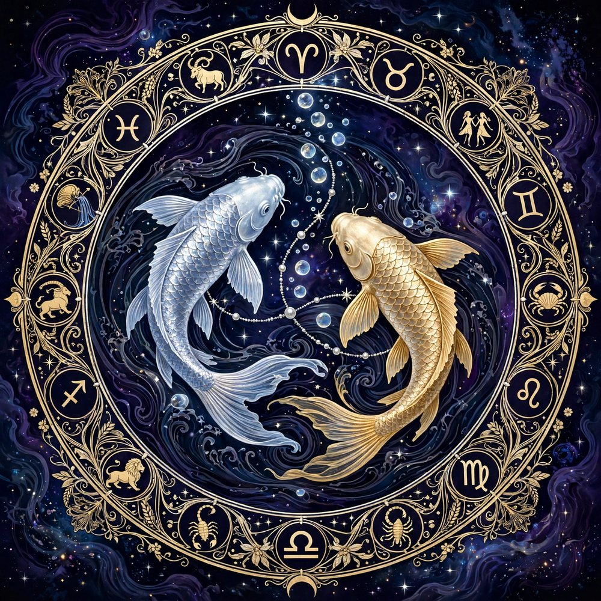

Sun in Pisces
The Core
You swim between worlds. Pisces Suns are old souls — empathic, imaginative and moved by music, water and spirit.

Pisces is the zodiac's mystic — a mutable water sign ruled by Neptune, planet of dreams, spirit and the boundless sea. The two Fish swim in opposite directions: toward spirit and toward matter, fantasy and reality. Pisces feels all of it. This is the last sign of the zodiac, and it carries something of every sign before it — which is why Pisces empathy seems to have no bottom.
Gentle, artistic and quietly wise, Pisces natives heal by presence and create from dreams. Their lesson is boundaries: learning that you can save the feeling without drowning in it, and that escape is sweetest when reality is kind.
You swim between worlds. Pisces Suns are old souls — empathic, imaginative and moved by music, water and spirit.
Your feelings are boundless and absorbent. Solitude, art and the sea restore what the world drains.
You appear soft, dreamy and kind — an otherworldly calm that makes people confide in you.
In love, Pisces is romantic, tender and soulfully devoted — they fall in love with the beloved's inner world and love it without conditions. They need gentleness, honesty and a partner who protects their softness instead of exploiting it.
Pisces excels in art, music, healing, film, spirituality and care work — anywhere sensitivity is the instrument. Their best work feels channeled rather than manufactured.